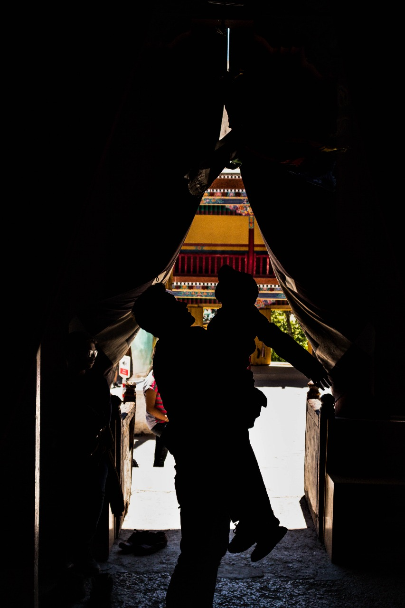

Ladakh

Hey everyone, I’m back! And honestly, I never thought I’d miss photography this much. It has been a part of me ever since I discovered my passion for it,
and I’ve always wanted to do more—push my limits, chase new frames, and tell stories through my lens.
It all started back in my first year of college. What began as just an extracurricular activity quickly turned into something much bigger. Before I knew it, I was exploring every corner of my city, searching for untold stories to capture. I travelled to the farthest, most rugged parts of the country, just to take that one perfect shot—like a souvenir, a piece of a place to keep with me forever. And the journey that ignited it all? My first trip to Ladakh. That’s where my love for photography truly took flight.
But then, life happened. In the blink of an eye, those frequent escapes into photography turned into rare moments. Weekly photo walks became monthly, then yearly. The challenges I set for myself, the little creative projects, the thrill of capturing something new—all of it started slipping away. And I missed it. I missed the rush, the adventure, the way photography made me see the world differently.
But no more. I’ve decided to make time. To pick up my camera again, not just to take pictures, but to share my stories—the beauty I’ve seen, the experiences that shaped me, and the moments that made me feel alive.
I used to think my experiences were treasures meant just for me. But someone once told me that by sharing them, I could inspire others—to explore, to appreciate, and to respect the cultures and landscapes that make our world so incredible. So that’s what I’m going to do. I’ll show you what I’ve seen, tell you what not to miss, and maybe, just maybe, help you fall in love with the world the way I did.
To those who stuck around despite my absence, thank you. I promise to be more present, to bring you along on my adventures, and to share my world through my lens once again.
"Yeh hai mera nazariya."
It all started back in my first year of college. What began as just an extracurricular activity quickly turned into something much bigger. Before I knew it, I was exploring every corner of my city, searching for untold stories to capture. I travelled to the farthest, most rugged parts of the country, just to take that one perfect shot—like a souvenir, a piece of a place to keep with me forever. And the journey that ignited it all? My first trip to Ladakh. That’s where my love for photography truly took flight.
But then, life happened. In the blink of an eye, those frequent escapes into photography turned into rare moments. Weekly photo walks became monthly, then yearly. The challenges I set for myself, the little creative projects, the thrill of capturing something new—all of it started slipping away. And I missed it. I missed the rush, the adventure, the way photography made me see the world differently.
But no more. I’ve decided to make time. To pick up my camera again, not just to take pictures, but to share my stories—the beauty I’ve seen, the experiences that shaped me, and the moments that made me feel alive.
I used to think my experiences were treasures meant just for me. But someone once told me that by sharing them, I could inspire others—to explore, to appreciate, and to respect the cultures and landscapes that make our world so incredible. So that’s what I’m going to do. I’ll show you what I’ve seen, tell you what not to miss, and maybe, just maybe, help you fall in love with the world the way I did.
To those who stuck around despite my absence, thank you. I promise to be more present, to bring you along on my adventures, and to share my world through my lens once again.
"Yeh hai mera nazariya."

The Magic of Hemis Gompa Monastery
We landed in the early morning, greeted by the crisp mountain air and the quiet serenity of Ladakh. The hotel staff advised us to rest before beginning our tour, but how could I? I had dreamed of this place for so long, imagining its ancient monasteries, prayer flags fluttering against the clear blue sky, and the whispers of monks chanting in harmony with the wind. The excitement in me was unbearable. From my hotel window, I watched the golden rays of the rising sun bathe the mountains, itching to step outside and capture every moment.
Finally, at 10:30, we set out on our journey into this mystical world, our first stop—the famous Hemis Gompa Monastery.
“It is a Buddhist monastery located in Leh City, Ladakh,” our guide explained as we approached. “It belongs to the Drukpa lineage of Buddhism and was first established in the 11th century, later re-established in the 17th century by the Ladakhi King Sengge Namgyal. It is also famous for its two-day religious ceremony, the Hemis Festival.”
Facts. You can find them anywhere. But what no guidebook could ever tell you is what it feels like to be here.
The moment I stepped inside, a wave of peace rushed through me, as if the very air carried whispers of wisdom and serenity. The towering walls, draped in centuries of history, seemed to hum with stories of devotion and resilience. I reached out and spun a prayer wheel, watching it turn effortlessly under my fingers, sending prayers into the wind. A profound sense of calm washed over me.
My family, on the other hand, was creating their own version of serenity—by making a ruckus, excitedly pointing at everything and calling out to each other. But I couldn’t blame them. This place was a world waiting to be explored, and we were merely travelers eager to embrace its beauty.
Then, amidst the chants and the quiet rustling of prayer flags, I noticed a little boy. He was struggling to reach the monastery’s large bell, jumping with all his might but always falling just short. His tiny hands stretched towards it, determination glimmering in his eyes. For minutes, he kept trying.
Watching him, I nudged my brother. “Help him.”
Without hesitation, my brother lifted the child effortlessly, as if he were a stuffed toy. The boy’s face lit up with pure joy, his small fingers finally grasping the bell’s rope. He rang it with all his might, the chime echoing through the monastery. A victorious smile spread across his face—bright, innocent, unforgettable.
I clicked the moment. And even now, it remains my favorite memory of the trip. Those small, sparkling eyes, that uncontainable happiness—it was a reminder of the simple joys that make life magical.
Hemis Gompa had already given me a gift—one that no souvenir ever could.
We landed in the early morning, greeted by the crisp mountain air and the quiet serenity of Ladakh. The hotel staff advised us to rest before beginning our tour, but how could I? I had dreamed of this place for so long, imagining its ancient monasteries, prayer flags fluttering against the clear blue sky, and the whispers of monks chanting in harmony with the wind. The excitement in me was unbearable. From my hotel window, I watched the golden rays of the rising sun bathe the mountains, itching to step outside and capture every moment.
Finally, at 10:30, we set out on our journey into this mystical world, our first stop—the famous Hemis Gompa Monastery.
“It is a Buddhist monastery located in Leh City, Ladakh,” our guide explained as we approached. “It belongs to the Drukpa lineage of Buddhism and was first established in the 11th century, later re-established in the 17th century by the Ladakhi King Sengge Namgyal. It is also famous for its two-day religious ceremony, the Hemis Festival.”
Facts. You can find them anywhere. But what no guidebook could ever tell you is what it feels like to be here.
The moment I stepped inside, a wave of peace rushed through me, as if the very air carried whispers of wisdom and serenity. The towering walls, draped in centuries of history, seemed to hum with stories of devotion and resilience. I reached out and spun a prayer wheel, watching it turn effortlessly under my fingers, sending prayers into the wind. A profound sense of calm washed over me.
My family, on the other hand, was creating their own version of serenity—by making a ruckus, excitedly pointing at everything and calling out to each other. But I couldn’t blame them. This place was a world waiting to be explored, and we were merely travelers eager to embrace its beauty.
Then, amidst the chants and the quiet rustling of prayer flags, I noticed a little boy. He was struggling to reach the monastery’s large bell, jumping with all his might but always falling just short. His tiny hands stretched towards it, determination glimmering in his eyes. For minutes, he kept trying.
Watching him, I nudged my brother. “Help him.”
Without hesitation, my brother lifted the child effortlessly, as if he were a stuffed toy. The boy’s face lit up with pure joy, his small fingers finally grasping the bell’s rope. He rang it with all his might, the chime echoing through the monastery. A victorious smile spread across his face—bright, innocent, unforgettable.
I clicked the moment. And even now, it remains my favorite memory of the trip. Those small, sparkling eyes, that uncontainable happiness—it was a reminder of the simple joys that make life magical.
Hemis Gompa had already given me a gift—one that no souvenir ever could.